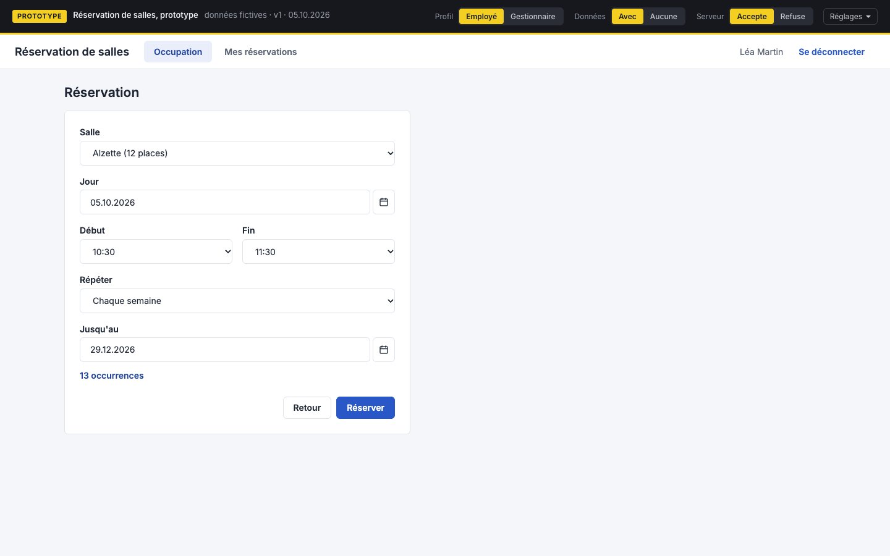
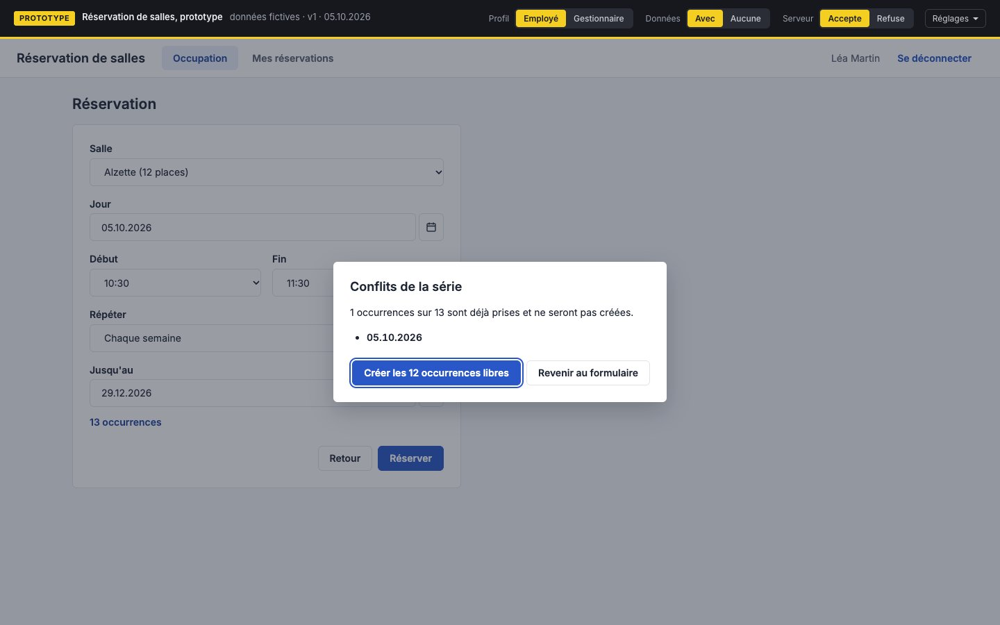
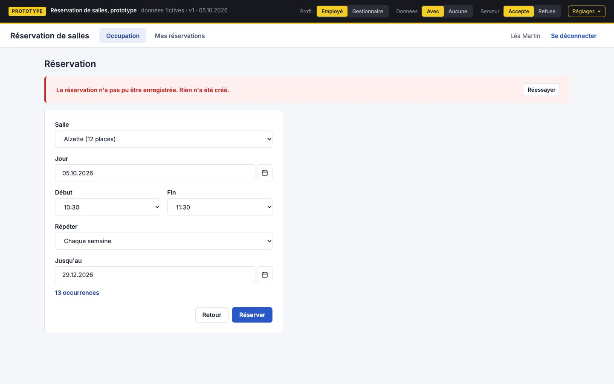

US-006 : Réserver une série quotidienne ou hebdomadaire
Contexte
Les réunions d'équipe reviennent chaque semaine, parfois chaque jour. Avec la seule réservation ponctuelle (US-005), l'employé repose le même créneau autant de fois et découvre les conflits un par un. La série pose toutes les occurrences en une fois et montre d'emblée celles qui tombent sur un créneau déjà pris.
Besoin
En tant qu'employé, je veux réserver une salle sur un même créneau chaque jour ouvré ou chaque semaine, jusqu'à une date de fin, afin de poser ma réunion régulière une seule fois.
Périmètre
Dans la story
- le choix de la fréquence (quotidienne, hebdomadaire) et de la date de fin dans le formulaire de réservation ;
- le calcul des occurrences et le contrôle de chacune ;
- la présentation des occurrences en conflit et la confirmation ;
- la création des occurrences libres.
Règles fonctionnelles
Invariants déclaratifs, numérotés. Une règle de gestion partagée cite son BR-xx. Une question ouverte porte son badge, qui renvoie à la question.
| N° | Règle | Règle de gestion |
|---|---|---|
| R1 | Une série est quotidienne, sur les jours ouvrés du lundi au vendredi, ou hebdomadaire, le même jour de la semaine que la première occurrence. | BR-04 |
| R2 | La dernière occurrence tombe au plus 3 mois après la première. Une date de fin au-delà est refusée. | BR-04 |
| R3 | Chaque occurrence respecte les règles du créneau : pas de 15 minutes, heures ouvrées, 4 heures au plus, pas dans le passé. | BR-02, BR-03 |
| R4 | Une occurrence qui chevauche une réservation active de la salle est en conflit. | BR-01 |
| R5 | Les occurrences en conflit sont présentées avant toute création. Après confirmation, seules les occurrences libres sont créées ; sans confirmation, rien n'est créé. | BR-05 |
| R6 | Les jours fériés ne sont pas exclus du calcul. Q-005 | hypothèse |
Exigences transverses
Ce que la recette vérifie sans qu'une règle métier le dise : états de l'écran, accessibilité, libellés, performance, sécurité. Une ligne par exigence, avec la façon de la vérifier.
| Catégorie | Exigence | Vérification |
|---|---|---|
| État chargement | Pendant le calcul des occurrences et l'enregistrement, un indicateur de chargement s'affiche et le bouton de confirmation est inactif. | recette visuelle |
| État erreur | Un échec d'enregistrement affiche un message d'erreur et ne crée aucune occurrence. | scénario S7 |
| Accessibilité annonce | À l'ouverture, la liste des occurrences en conflit est annoncée par le lecteur d'écran. | test au lecteur d'écran |
| Accessibilité clavier | Le focus va sur « Créer les <n> occurrences libres » à l'ouverture ; « Échap » abandonne sans rien créer. | scénario S6, test clavier |
| Libellés | Les textes affichés reprennent la conception fonctionnelle au mot près (MSG-02, MSG-04). Aucune chaîne en dur. | revue de code |
Critères d'acceptation
Scénarios numérotés, un comportement chacun, sans donnée de test. Un ticket, un test ou une campagne cite un scénario par son identifiant US-006/S4, en lien vers l'ancre #S4 de cette page.
Scénario 1 : réserver une série sans conflit
Étant donné qu'aucune occurrence de la série ne chevauche une réservation de la salle
Quand l'employé réserve une série hebdomadaire jusqu'à une date de fin valide
Alors toutes les occurrences sont créées
Et le message « Réservation confirmée : <salle>, le <date> de <début> à <fin>. » s'affiche pour la première occurrence
Scénario 2 : la série quotidienne saute le week-end
Étant donné qu'une série quotidienne commence un vendredi
Quand l'employé la réserve
Alors l'occurrence suivante tombe le lundi
Scénario 3 : la date de fin dépasse 3 mois
Étant donné que la date de fin choisie tombe plus de 3 mois après la première occurrence
Quand l'employé valide la série
Alors la série n'est pas créée
Et le formulaire signale la date de fin comme invalide
Scénario 4 : des occurrences sont en conflit
Étant donné que certaines occurrences chevauchent une réservation de la salle
Quand l'employé valide la série
Alors le message « <n> occurrences sur <total> sont déjà prises et ne seront pas créées. » s'affiche
Et la liste des occurrences en conflit s'affiche avec leur date
Et aucune occurrence n'est encore créée
Scénario 5 : confirmer malgré les conflits
Étant donné que les occurrences en conflit sont présentées
Quand l'employé confirme
Alors seules les occurrences libres sont créées
Scénario 6 : renoncer à la série
Étant donné que les occurrences en conflit sont présentées
Quand l'employé choisit « Annuler » ou appuie sur « Échap »
Alors aucune occurrence n'est créée
Scénario 7 : l'enregistrement échoue
Étant donné que l'application ne peut pas enregistrer la série
Quand l'employé confirme
Alors un message d'erreur s'affiche
Et aucune occurrence n'est créée
Écrans et prototype
Chaque écran et état touché, avec son lien dans le prototype et sa capture (US-006_<ce-qu-elle-montre>.jpg, à côté de la story).
| Écran | État | Prototype | Ce qu'il montre |
|---|---|---|---|
| SCR-04 | série, nominal | #SCR-04, Répéter : Chaque semaine | fréquence et date de fin |
| SCR-04 | conflits | #SCR-04, série sur Alzette à 10:30, puis Réserver | message MSG-04 et liste des occurrences prises |
| SCR-04 | erreur | #SCR-04, barre : Réglages > États > Erreur | échec d'enregistrement |

US-006_serie-nominale.jpg
US-006_conflits.jpg
US-006_erreur.jpgDonnées d'exemple
Fictives, pour le QA et les devs. Chaque jeu dit quel scénario il illustre. Aucune règle ici.
| Jeu | Illustre | Données |
|---|---|---|
| D1 | S1 | salle « Atlas », hebdomadaire, mardi 06.10.2026 10h00-11h00, fin 29.12.2026 : 13 occurrences |
| D2 | S2 | salle « Atlas », quotidienne, vendredi 09.10.2026 9h00-9h30 : occurrence suivante lundi 12.10.2026 |
| D3 | S4, S5 | comme D1, avec le mardi 20.10.2026 10h00-11h00 déjà réservé : 1 conflit, 12 occurrences créées |
Notes techniques
Endpoints, traitements, entités et schémas : générés par team/scripts/detailed-pages.mjs depuis la balise meta name="endpoints" et la conception détaillée, ne pas les éditer. L'architecte écrit en P3 les contraintes et le tableau scénario, élément, écran. Pas de chemins de code.
- Endpoints
- EP-04
GET /sallesLister les salles contrat figé
EP-09POST /series/apercuCalculer les occurrences d'une série et leurs conflits contrat figé
EP-10POST /seriesCréer une série contrat figé - Traitements
- PROC-01 Calculer les occurrences et leurs conflits
PROC-02 Contrôler et enregistrer un créneau - Entités
- EN-03 Salle (lecture)
EN-05 Réservation (écriture)
EN-06 Série (écriture) - Schémas
Salle,SerieDemande,SerieApercu,SerieConfirmation,SerieCreee
- Contraintes
- création atomique dans une transaction immédiate ; arbitrage PO : une occurrence confirmée prise depuis l'aperçu fait répondre
SERIE_CONFLITS_CHANGESsans rien créer ; une série de plus de 3 mois est refusée, pas tronquée (PROC-01, arbitrage)
| Scénario | Servi par | Écran |
|---|---|---|
| S1 sans conflit | EP-09 sans conflit, puis EP-10 avec tous les jours | SCR-04, puis SCR-05 avec MSG-02 |
| S2 week-end sauté | PROC-01, étape des dates | SCR-04, récapitulatif |
| S3 plus de 3 mois | EP-09 SERIE_TROP_LONGUE ; sélecteur « Jusqu'au » borné | SCR-04, MSG-U13 |
| S4 conflits présentés | EP-09, rien n'est écrit | Conflits de la série, MSG-04 |
| S5 confirmer malgré les conflits | EP-10 avec les jours confirmés | dialogue, puis SCR-05 |
| S6 renoncer | aucun appel d'écriture | dialogue, « Échap » |
| S7 échec d'enregistrement | EP-10 INTERNAL_ERROR, transaction annulée | SCR-04, MSG-U06 |
Points à trancher
Definition of Ready
- Un seul acteur dans le besoin, et le « afin de » se vérifie à la recette de la story
- Chaque règle est déclarative ; les règles partagées citent leur BR-xx
- Les scénarios sont numérotés, nommés, complets, sans donnée de test
- Nominal, cas bloqué, chaque acteur, chaque parcours et l'état d'erreur sont couverts
- Les libellés sont au mot près, conformes à la conception fonctionnelle
- Chaque écran touché est cité, atteignable dans le prototype, avec sa capture
- Aucun point à trancher bloquant ; chaque question ouverte porte son badge Q-xxx
- Taille XS à L (une story XL se découpe avant d'entrer en sprint), part front renseignée, dépendances listées
- Notes techniques et endpoints renseignés par l'architecte (requis avant le sprint planning)